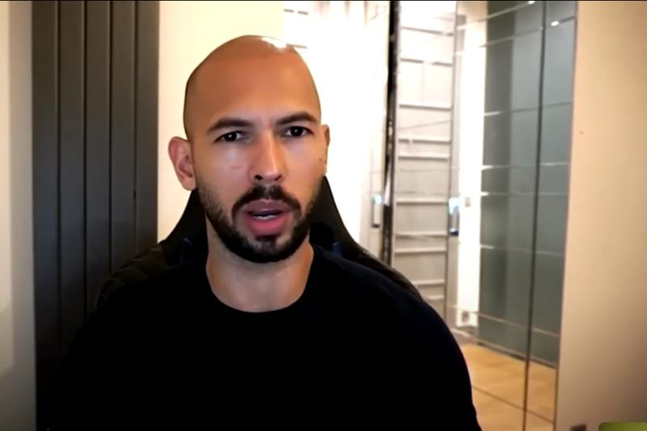

Observer investigation reveals how the ex-kickboxer and Big Brother contestant from Luton has gone from obscurity to global internet fame in months
Andrew Tate says women belong in the home, can’t drive, and are a man’s property. He also thinks rape victims must “bear responsibility” for their attacks and dates women aged 18–19 because he can “make an imprint” on them, according to videos posted online.
andrew tate song- December 14, 1986
- 6 ft 1 in
- 198 lb